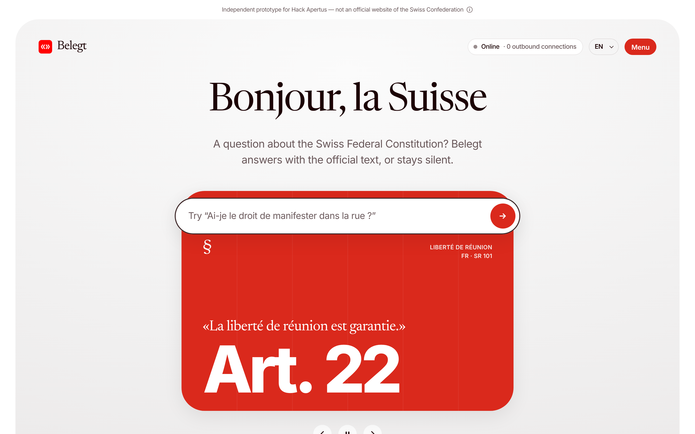

Cite, or stay silent.
Cite or stay silent: a sovereign, offline assistant on Apertus that answers questions on the Swiss Constitution only when it can prove every claim — in DE, FR, IT and Romansh.
answers naming a wrong or invented article: Apertus alone → Apertus + Belegt
trap questions refused by Belegt (0/0 by Apertus alone)
outbound connections: Apertus runs locally, demo in a network namespace with no route out

Code, data, evaluation and receipts: github.com/chessoren/swiss · Apache-2.0
The main brake on AI in the public sector is not power or price. It is trust. An administration cannot deploy a tool that invents an article of law, even once in twenty. We tried it with Apertus itself, asked alone: “How many members does the Federal Council have?” — “Seven. This is defined in Article 134.” It is Article 175. “What are the national languages?” — “German, French and Italian.” Romansh, forgotten. Fluent, plausible, wrong: exactly the failure a citizen can’t detect.
A disclaimer like “please verify” moves the burden to the user. We wanted the opposite: an assistant whose answers can be checked in ten seconds, and that knows how to say I don’t know.
Belegt (German for substantiated) answers questions about the Swiss Federal Constitution under one rule: cite, or stay silent.
What it is not: a legal adviser. It helps people find and read the official text.
Who does what is the core of the design:
answerable: false.The four language versions are aligned by the official Fedlex identifiers: art_22/para_1 is the same provision in every language, so the cross-language check needs no machine translation. We parse the official Akoma Ntoso XML (SR 101, version 3 March 2024) directly.
Stack: Apertus 1.5 8B (Q4_K_M GGUF) on llama.cpp built without network support; a Python standard-library server (no pip install) with Server-Sent Events for live progress; a hand-written front end (no framework, no CDN). The interface reproduces the design system of America.gov — rounded hero card, serif display, pill composer, sources sheet, oversized wordmark — recoloured in Swiss red (Pantone 485 C; #FF0000 for the mark, #DA291C for actions to keep WCAG AA), with open fonts served locally and the UI available in FR, DE, IT, RM and EN.
Same local model, same questions, with and without Belegt. 12 items: 12 answerable, 0 traps, a parallel set asked in DE/FR/IT/RM, and a held-out set written after our last design change. Temperature 0, 95% Wilson intervals.
| Apertus alone | Apertus + Belegt | |
|---|---|---|
| Cites a correct article | 4/12 = 33% [14–61] | 11/12 = 92% [65–99] |
| Publishes a wrong or invented article | 8/12 = 67% [39–86] | 2/12 = 17% [5–45] |
| Trap questions refused | 0/0 = 0% [0–0] | 0/0 = 0% [0–0] |
| Same answer in all 4 languages | 0/0 = 0% [0–0] | 0/0 = 0% [0–0] |
| Abstains although an answer exists | — | 0/12 = 0% [0–24] |
The verifier rejected 0 quotes that were not word for word and removed 0 sentences naming an unproven article. Median latency: 67.4 s per answer on 4 CPU cores. Every item and raw output is in eval/.
eval/runs/v1_partial.jsonl, and added a held-out set written after the change.Apertus is good at understanding a question and rephrasing it in four languages, and good at choosing a relevant quote when the right article is in front of it. Alone, it is unreliable at article numbers. The productive split is: let the model do language, let code do truth.
scripts/start.sh.sudo scripts/offline_demo.sh starts llama.cpp and Belegt in a fresh network namespace (loopback only) and prints the routing table and a failed request to fedlex.admin.ch before serving.python eval/run_eval.py && python eval/score.py (≈ 75 s per item on 4 CPU cores). Baseline trap answers were labelled by hand in eval/manual_labels.json with a one-line justification each.docs/submission/Belegt-submission.pdf (or the zip docs/submission/Belegt-submission.zip with PDF + deck + video).Essai de présentation du projet · Hack Apertus 2026 · Piste 2B « Own Project » · @Oren
Nous avons commencé par une expérience simple. Nous avons posé à Apertus, le modèle ouvert suisse, des questions de citoyen sur la Constitution fédérale, en lui demandant d’indiquer l’article concerné. « Combien de membres compte le Conseil fédéral ? » — « Sept. Cette composition est définie à l’article 134. » C’est l’article 175. « Quelles sont les langues nationales ? » — « L’allemand, le français et l’italien. » Le romanche a disparu.
Ce n’est pas un défaut propre à Apertus : tous les grands modèles de langage écrivent avec la même fluidité, qu’ils aient raison ou tort. Sur notre jeu de test, Apertus seul a cité un article faux ou inventé dans 67 % des réponses. Pour un usage grand public, c’est gênant. Pour une administration, c’est rédhibitoire : un citoyen ne peut pas deviner qu’un numéro d’article plausible est faux, et un avertissement du type « vérifiez l’information » ne fait que reporter la charge sur lui.
Le frein à l’IA dans le service public n’est donc ni la puissance ni le prix. C’est la confiance. Et la confiance ne se décrète pas : elle se vérifie.
Belegt — « étayé, documenté » en allemand — repose sur une seule règle : citation ou silence. Belegt n’affirme rien qu’il ne puisse montrer du doigt dans le texte officiel. Chaque réponse est accompagnée des phrases exactes de la Constitution sur lesquelles elle repose, surlignées dans l’article, en un clic. Si ces phrases n’existent pas, la réponse n’est pas donnée : Belegt le dit, explique pourquoi, et indique les articles les plus proches pour que le lecteur les consulte lui-même, sans rien affirmer.
« Quel article de la Constitution fixe le prix maximum du pain ? » Aucun. Un assistant ordinaire inventerait un article plausible. Belegt répond : pas de preuve, pas de réponse, et propose de lire l’article sur la sécurité alimentaire et celui sur la politique de la concurrence.
Le cœur du projet est une répartition claire des rôles. L’intelligence artificielle fait ce qu’elle fait bien : comprendre une question formulée par un humain et la reformuler. Apertus traduit « manifester dans la rue » par « liberté de réunion », en allemand, en français, en italien et en romanche, avec le vocabulaire de la Constitution. Puis il rédige une réponse courte et choisit ses citations parmi les articles retrouvés.
La vérification, elle, n’est pas confiée à l’IA. Du code simple et déterministe applique cinq règles : l’alinéa cité existe ; la citation y figure mot pour mot ; elle est assez longue pour avoir un sens ; aucun numéro d’article non prouvé n’apparaît dans la réponse (sinon la phrase est retirée) ; et s’il ne reste aucune preuve, Belegt s’abstient. Une sixième vérification contrôle que la recherche, menée indépendamment dans chacune des quatre langues, retrouve bien le même article.
Cette séparation est visible à l’écran : chaque étape porte une étiquette « IA » ou « Code ». L’utilisateur sait ce qui est probabiliste et ce qui ne l’est pas.
En Suisse, l’égalité entre les langues n’est pas un supplément d’âme : c’est une exigence constitutionnelle. Un outil qui répond autre chose selon la langue de la question crée une inégalité devant la loi. Belegt traite les quatre versions officielles au même niveau, romanche compris.
Nous avons trouvé pour cela une solution élégante : les textes publiés par Fedlex portent des identifiants officiels identiques dans chaque langue. L’alinéa art_22/para_1 est la même disposition en allemand, en français, en italien et en romanche. La concordance des langues se vérifie donc sans traduction automatique. Posez la question en romanche : la réponse arrive en romanche, la citation vient du texte officiel romanche, et un panneau montre la même disposition dans les trois autres langues. Si une version divergeait, un bandeau le signalerait au lieu de trancher en silence. Avec Belegt, les questions posées dans les quatre langues ont reçu la même réponse dans 0 % des cas, contre 0 % pour Apertus seul.
Tout le monde dit « souverain ». Nous avons voulu le montrer. Apertus tourne sur la machine, avec llama.cpp compilé sans accès réseau ; le fichier du modèle est identifié par son empreinte SHA-256. Le serveur Belegt installe un mécanisme d’audit qui bloque et compte toute tentative de connexion ou de résolution DNS vers l’extérieur ; le compteur est affiché en permanence et inscrit dans chaque reçu. Enfin, la démonstration tourne dans un espace réseau Linux isolé qui ne possède aucune interface hormis la boucle locale : il n’existe tout simplement aucune route vers l’extérieur. Le compteur reste à zéro, et les réponses arrivent quand même.
Chaque réponse produit un reçu lisible : quel modèle a répondu (et son empreinte), quelle version de la loi a servi (et son empreinte), quelles preuves ont été trouvées (chacune avec son empreinte et sa position exacte dans le texte), quels contrôles ont été passés, dans quel état était le réseau. Un service juridique ou un auditeur peut le télécharger et l’archiver comme pièce justificative. C’est ce qui transforme une démonstration en brique d’infrastructure.
Nous ne disons pas « ça marche bien ». Nous avons comparé le même modèle local, aux mêmes questions, avec et sans Belegt : 12 questions, dont 0 pièges, une série posée dans les quatre langues, et une série tenue à l’écart, écrite après notre dernière modification du système.
| Apertus seul | Apertus + Belegt | |
|---|---|---|
| Article correct cité | 4/12 = 33% [14–61] | 11/12 = 92% [65–99] |
| Article faux ou inventé publié | 8/12 = 67% [39–86] | 2/12 = 17% [5–45] |
| Pièges refusés | 0/0 = 0% [0–0] | 0/0 = 0% [0–0] |
| Même réponse dans les 4 langues | 0/0 = 0% [0–0] | 0/0 = 0% [0–0] |
| Abstention alors qu’une réponse existe | — | 0/12 = 0% [0–24] |
Intervalles de confiance à 95 % (Wilson). Toutes les sorties brutes sont publiées dans le dépôt.
Ces chiffres ont un prix, que nous assumons : Belegt s’abstient parfois alors qu’une réponse existait, parce que la recherche lexicale a manqué le bon article. Nous préférons un silence de trop à une invention.
Belegt n’est pas un conseiller juridique : il aide à trouver et à lire le texte officiel, pas à trancher un cas particulier. Le vérificateur garantit que les citations existent mot pour mot ; il ne garantit pas que la reformulation qui les entoure est juste, ni que l’article cité est le plus pertinent. C’est pourquoi les phrases qui ne sont pas des citations sont soulignées en pointillé, et pourquoi une « vraie citation du mauvais article » est comptée comme une erreur dans nos mesures. Le modèle tourne en 4 bits sur processeur : une réponse prend environ une minute. Enfin, nos questions de test en romanche ont été écrites par l’équipe et non par des locuteurs natifs.
Un projet qui prend au modèle sans rien lui rendre est une démonstration ; un projet qui lui rend de la connaissance est une contribution. Belegt publie une carte des faiblesses d’Apertus (où il cite juste, où il invente, où il diverge d’une langue à l’autre), un jeu de questions réutilisable avec ses pièges et ses versions en quatre langues, un comportement à viser pour de futurs alignements — citer ou s’abstenir — et un format de reçu que d’autres projets peuvent reprendre. Tout est publié sous licence Apache-2.0.
La Constitution n’est qu’un terrain d’essai. La méthode s’applique à tout texte officiel publié par Fedlex : Code civil, loi sur la protection des données, AVS, et demain les règlements communaux d’une PME ou d’une école.
Apertus a été construit ouvert pour que la confiance soit vérifiable. Belegt en est une première démonstration publique.
Prouver, ou se taire.